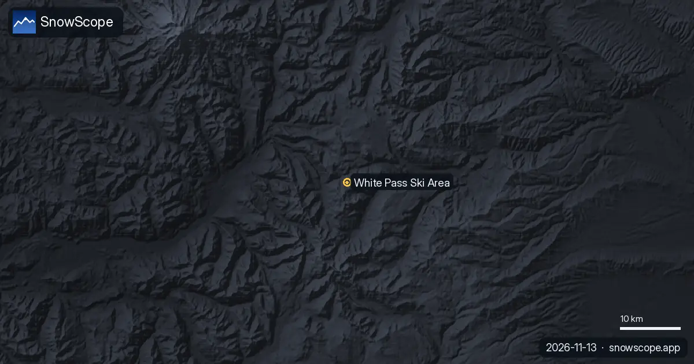

White Pass ف دجنبر: كيفاش تحجز نهار تزلج بـ69 $ بفرصة حقيقية ديال التلج
White Pass كيكافئ لي كيخطط مزيان. التيكيات ديال الكبار الأرخص كيتباعو أونلاين، من قبل، بثمن يبدا من 69 $ فوسط السيمانة، والتاريخ ديالنا ديال التلج كيقول بلي النص الثاني ديال دجنبر هو اللي الرهان كيولي مضمون.
شوف توقعات التلج مباشرة ديال White Pass Ski Area فالتطبيق ديال SnowScopeالعلو ديال التلج، التنبيهات والخريطة 3D، فابور.ممر هادي تحت Mount Rainier
White Pass كاين على US-12 فالشرق ديال Packwood، فظل Mount Rainier. على الخريطة ديالنا عندو 8 تيليفيريكات وحوالي 22 mi (36 km) ديال البيستات، بين تقريبا 4,480 ft (1,367 m) و 6,520 ft (1,987 m). ماكاينش قرية خاصك تخلص فيها، وهادشي جزء من السبب اللي نهار هنا كيكلف أقل من المحطات الكبيرة.
الشتاء غالبا كيدخل بكري: فوسط الـ46 شتاء ديال التاريخ ديالنا، التلج اللي كيبقى كيوصل لوسط الجبل فآخر أكتوبر.

لعبة الحجز
White Pass كيخدم بثمن أونلاين متحرك لموسم 2026/27. تيكي الكبار كيبدا من 69 $ فأيام وسط السيمانة، من الاثنين للخميس برا العطل، و89 $ فأيام الذروة، من الجمعة للحد والأعياد. مع ما كتبيع التواريخ، الثمن كيطلع درجة درجة، لحد 99 $ فوسط السيمانة و119 $ فنهار الذروة.
فالواقع، الثمن الأدنى كيمشي للي كيختار نهار ديال وسط السيمانة وكيشري بكري. إلا تسنيتي نشرة التلج ومن بعد حجزتي نهار سبت ديال دجنبر، توقع تخلص قريب من أعلى الفرق.

شنو هي السيمانة ديال دجنبر اللي خاصك تحجز فيها
التاريخ ديالنا كيعطي درجة واضحة. النسبة ديال الشتوات اللي فيهم تلج مزيان فوسط الجبل (معدل أسبوعي ديال 20 in، 50 cm، ولا كثر) هي 74% فالسيمانة من 30 نونبر لـ6 دجنبر، 85% من 7 لـ13 دجنبر، 91% من 14 لـ20 دجنبر و96% من 21 لـ27 دجنبر.
ف15 دجنبر عادي، وسط الجبل، حوالي 5,500 ft (1,677 m)، فيه 40 in (102 cm) والقمة 42 in (107 cm). مع 31 دجنبر وسط الجبل كيوصل لـ59 in (151 cm). دجنبر ضعيف (شتاء وحد من كل عشرة) كان فيه مازال 17 in (42 cm) فوسط الجبل نهار 15، يكفي للبيستات المهيأة، ماشي باش تستكشف.
White Pass، Mt. Baker ولا Timberline؟
Mt. Baker فيه تلج أكثر على حساب الأرقام ديالنا، 46 in (116 cm) فوسط الجبل ف15 دجنبر عادي، ولكن كيبيع غير نهار بنهاره: 98.80 $ فوسط السيمانة و115.42 $ فالذروة. التيكي ديال النهار الكامل ديال Timberline ثمنو 129 $ فوسط السيمانة و161 $ فالذروة.
إذن White Pass هو الأرخص من التلاتة إلا حجزتي بكري نهار ديال وسط السيمانة، وMt. Baker هو الرهان الأضمن ديال التلج. التنين كيربحو فالثمن على نهار ذروة ف Mt. Hood.
طريق أخرى: Indy Pass
White Pass كاين فلائحة Indy Pass ديال 2026-27. Indy Base Pass ثمنو 419 $ للكبار وكيعطي يومين ف كل محطة من أكثر من 300 محطة عضوة، بتواريخ ممنوعة؛ Indy+ Pass بـ469 $ كيحيد هاد الممنوعات. إلا خططتي لبزاف رحلات لمحطات صغار هاد الشتاء، يستاهل تقارن معاه شوية تيكيات ديال النهار أونلاين.
نصايح للي كيتزلجو
- اختار التاريخ ديالك ديال دجنبر بكري وفنهار ديال وسط السيمانة باش توصل للثمن الأدنى ديال 69 $.
- إلا قدرتي تصبر، حجز السيمانة من 14 لـ20 دجنبر ولا بعدها: الشتوات اللي فاتو كانو أضمن بزاف من هاد الوقت.
- US-12 فوق الممر يقدر يسد ولا يطلب السلاسل ف العواصف: شوف نشرة الممر قبل ما تسوق.
- الشتاء اللي فات كان ضعيف بزاف هنا، فلا تحكم على هاد الموسم بيه: شوف خريطة التلج السيمانة لي قبل.
المراجع والمصادر
- White Pass, online day tickets 2026/27 (official) skiwhitepass.com/online-day-ticket-sales
- Indy Pass, shop 2026-27 (official) www.indyskipass.com/shop
- Mt. Baker Ski Area, daily lift tickets (official) www.mtbaker.us/tickets-and-passes/daily-lift-tickets/
- Timberline Lodge, winter lift tickets 2026/2027 (official) www.timberlinelodge.com/activities/winter/lift-tickets/
- OpenSkiMap (mapped lifts and runs) openskimap.org/
- avalanche.org, US avalanche centers and forecasts avalanche.org/
على هاد الأرقام
أرقام التلج: التاريخ ديال التلج ديال SnowScope، 46 شتوة اللي فاتت (1980-81 حتى ل 2025-26) فالعلوات المكتوبة (التحت، الوسط، الفوق)، إعادة بناء ديال التلج اللي فات لمنطقة مصححة بالعلو (على أساس ERA5-Land؛ Snow_Hydro 1 كم للمغرب)، ماشي البلاغات ديال المحطة. التلج دابا: الخريطة ديال SnowScope. التيليسييجات والبيستات والعلوات: الخرايط ديال OpenSkiMap. الأثمنة: الصفحات الرسمية اللي لتحت، متشافة نهار 13 نونبر 2026؛ الأثمنة الدينامية كتبدل مع التاريخ والطلب.
النشرات الرسمية ديال الانهيارات: avalanche.org (US national portal)
كيفاش تستاشهد بهاد المقال
للبحث، التعليم ولا الصحافة: الأرقام والرسومات تقدر تعاود تخدم بيهم بحرية تحت CC BY 4.0 مع هاد الاستشهاد.
SnowScope (2026), White Pass ف دجنبر: كيفاش تحجز نهار تزلج بـ69 $ بفرصة حقيقية ديال التلج, https://snowscope.app/blog/ar/2026/11/white-pass-december-skiing-budget-2026.html, تشاف ف 2026-11-14
SnowScope (Atlas Labs). (2026, November 14). White Pass ف دجنبر: كيفاش تحجز نهار تزلج بـ69 $ بفرصة حقيقية ديال التلج. SnowScope snow reports. https://snowscope.app/blog/ar/2026/11/white-pass-december-skiing-budget-2026.html
BibTeX
@misc{snowscope2026whitepassdecemberskiingb,
author = {{SnowScope (Atlas Labs)}},
title = {White Pass ف دجنبر: كيفاش تحجز نهار تزلج بـ69 $ بفرصة حقيقية ديال التلج},
year = {2026},
month = nov,
howpublished = {\url{https://snowscope.app/blog/ar/2026/11/white-pass-december-skiing-budget-2026.html}},
note = {Published 2026-11-14 17:07 UTC; accessed 2026-11-14}
}· CC BY 4.0 · الطريقة، الداتا والأدوات →
White Pass Ski Area: التلج والحرارة حسب العلو، هاد الشتا مقارنة مع اللي فاتت (الأدوات) →
تابع White Pass Ski Area
فابور: ميساج ملي يجي التلج، والتوقعات كل صباح.
تقارير أخرى ديال التلج

العلو كيبدل كلشي ف Telluride: الموديل ديالنا كيعطي 0 إنش (0 سم) فالتحت (8734 قدم / 2662 م)، 2 إنش (6 سم) فالوسط (10620 قدم / 3237 م) و 38 إنش (96 سم) …

Indy Base Pass ب419 $، Indy+ ب469 $، يومين فكل محطة منخرطة. قارناه بالأثمنة ديال النهار اللي تأكدنا منهم ف7 محطات Indy ف دجنبر، ومعاهم فرص التلج ديالهم.